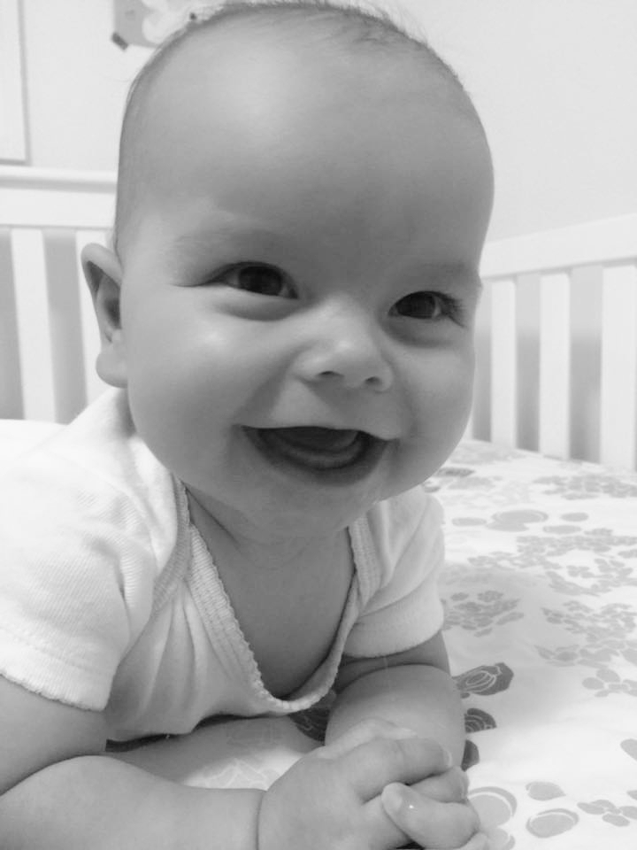

HOME | BIO | STORE | AWARDS | TITLES | EXHIBITIONS | CONTACT
_____________________________________________________________________________________________________________________________________
Luisa Auden is an American Jewellry Designer, born in 2015 in Cambridge, Massachusetts, USA. Very earlier in her childhood, it was clear her passion and incredible talent to the Visual Arts as a whole. Differently from the absolutely majority of her friends from high school, she decided not go to college. Instead, Luisa Auden built her path in the Jewellry Design field in a very unique style: conducting independent research, traveling world-wide in order to learn about her industry from different cultures, participating in work-shops being mentored by legends of the design from world-wide, as well as working as a sole-practitioner.
Her very unique, personal, creative, irreverent, forward-thinking, out-of-the-box approach and understanding of Art and Design, resulted in a very first Jewellry collection that totally disrupted the Status-Quo. Even before her earlier 20's, in her teenagehood Luisa Auden started to win the majority of the most important Jewellry Design Awards not only in The United States, but World Wide. Replicas of her first creation, which made her a Star of the Design of her generation, kindly entitled - Sacred Heart: a ring of her authorship which design exhibts a Heart, in a tribute to her father, an Architect from his native Brazil and an immigrant of the United States of America - became a permanent patrimony of the Museum of Fine Arts of Boston (MFA), Museum of Modern Art (MOMA) of New York, the Louvre Museum (Paris | France) among many other relevant Art and Design Museums from all around the globe.
Currently in her earlier 30's Luisa Auden, after more then a decade and half of practice in the Jewellry Design industry, lives and works peacefully in Cambridge - MA | United States of America; manages the sales of her products in her online Design Store which brand markets her name; travels world wide participating in Exhibitions; and acts as a speacher in Lectures in the global setting.
_____________________________________________________________________________________________________________________________________
Luisa Auden - Jewellry Designer :: Cambridge, MA. USA :: Since 2015.